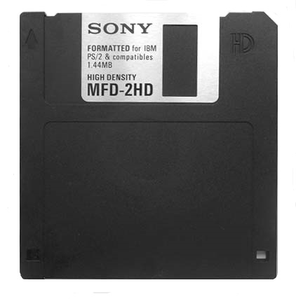

Внешний вид дискеты
Классический вид дискеты. Принципиальное отличие дискеты 3½ дюйма – жёсткий пластмассовый корпус.
Вместо индексного отверстия в дискетах диаметром 3½ дюйма используется металлическая втулка с установочным отверстием,
которая находится в центре дискеты. Механизм дисковода захватывает металлическую втулку, а отверстие в ней позволяет
правильно позиционировать дискету, поэтому отпала необходимость делать для этого отверстие непосредственно в магнитном диске.
В отличие от 8- и 5-дюймовых дискет, окно для головок дискеты 3½ дюйма закрыто шторкой из металла или пластмассы,
которая сдвигается в сторону специальным рычагом во время установки дискеты в дисковод. Защита от записи производится
небольшой сдвигающейся пластиковой шторкой в нижнем левом углу дискеты — открытое окошко соответствует активированной защите.
В правом нижнем углу находятся окошки, позволяющие схеме дисковода определить плотность записи на дискету:
- нет окошка — 720 КБ,
- окошко расположено в один уровень с окошком защиты от записи — 1,44 МБ,
- окошко расположено выше уровня окошка защиты от записи — 2,88 МБ.
Несмотря на многие недостатки — чувствительность к магнитным полям и недостаточную уже к середине 90-х годов ёмкость —
формат 3½ дюйма продержался на рынке треть века, начав сдавать позиции лишь после появления доступных по цене накопителей
на основе флэш-памяти.